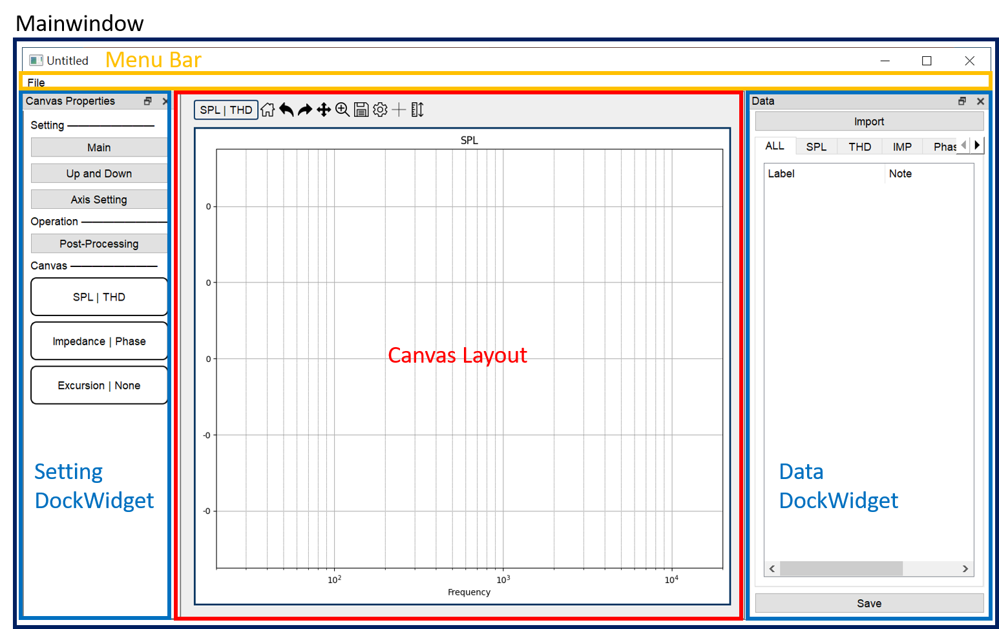

GUI Introduction¶
SAE聲學測試時經常使用的軟體為AP、Klippel、LEAP、Comsol等。 同一個產品常常需要在不同軟體上測試並交叉驗證，但彼此的資料卻無法共享，因此想開發一款簡單的桌面應用程式，提供一個資料格式通用的繪圖平台，除了基本的繪圖之外，能做更進一步的資料後處理。
Mainwindow¶
視窗以專案為單位，同時可開啟不同專案的多個視窗。每個專案內可儲存匯入的資料與畫布的個人化設定。 使用者介面分成四大區域: Menubar、Canvas Layout、Data DockWidget、Setting DockWidget。

A. Menubar¶


B. Canvas Layout¶
包含一列tool bar與畫布區域，有兩種不同的排版模式。
B-1. Toolbar¶

Focusing Canvas¶
Toolbar上的功能只能針對一個特定畫布使用，故一個視窗只有一個目標畫布(Focusing Canvas)，以黑色邊框標示，也可從Toolbar左邊看目前作用的畫布是哪一個，在畫布上雙鍵點擊滑鼠左鍵可以切換目標畫布，如下動圖所示。

Draggable Cross lines¶
可顯示一組垂直+水平線，使用滑鼠點擊線可拖拉線至預計標記的點，詳細座標標示於畫布右上角。

Graph Prooperties¶


Margin: 畫布的邊框留白大小。
Label: 曲線圖例顯示與否，圖例名稱換行的文字數目。
畫布上的三個軸: X軸、主Y軸、副Y軸。
可調整軸的範圍、標題、單位等等。
Curves
調整曲線的名稱、顏色、線寬，可以長按Shift選取多個曲線一次編輯。

B-2. Canvas Layout¶


應用程式預設有三張畫布，每個畫布有兩個y軸，左邊為主軸，右邊為副軸，共用同一個x軸。 每個y軸有其負責繪製的資料類型，預設的組合為下:
| Canvas (id) | Main axis | Sub axis |
|---|---|---|
| Canvas (0) | SPL | THD |
| Canvas (1) | IMP | Phase |
| Canvas (2) | EXC | None |
| Mode | Canvas set |
|---|---|
| Main | Canvas (0) |
| Up and Down | Canvas (0) + Canvas (1) |
C. Data DockWidget¶
預設在右邊的浮動視窗，列出目前匯入的資料。
C-1. Import Data¶
點擊Import觸發匯入檔案的對話視窗，匯入資料檔案於此專案中。

APKLIPPELLEAPCOMSOL: 此應用程式支援四種測試軟體的資料檔案，不同軟體的檔案類型與內部格式皆相異，匯入時請點擊相對應的按鈕。
Delete: 刪除選取的檔案資料，可長按Shift鍵選取多項。
Clear: 清空專案內的檔案資料。
C-2. Tab¶
匯入的資料依照測試項目可分為六種類別:
SPL: 頻率響應，Frequency Response。
THD: 總諧波失真，Total Harmonic Distortion。
IMP: 阻抗，Impedance。
PHS: 相位，Phase。
EXC: 震動行程，Excursion。
由於不同的資料將繪圖在不同的畫布上，使用列表上的標籤頁可自動篩選相對應類別的資料，ALL則列出全部的資料。

C-3. Save Project¶
點擊Save，將專案資料儲存於原先的開啟路徑，若尚未儲存過則會讓使用者設定儲存路徑與專案名稱。
D. Setting DockWidget¶
預設在左邊的浮動視窗。

D-2. Axis Setting¶
點擊Axis Setting觸發對話窗，可調整畫布的主軸與副軸繪製的資料類別。

若更動某一畫布y軸的資料類別，則在該畫布y軸原先的圖形都將被清空。 而因每個資料類別無法同時繪製在兩個y軸上，故單一y軸的更動可能會同時影響兩張畫布。 例如，若想將Canvas 0畫布的主軸改為IMP，會同時清除Canvas 0畫布與Canvas 1畫布的主軸，並將Canvas 1畫布的資料類別更改為NoType。
D-3. Post-Processing¶
點擊Post-Processing觸發資料後處理的對話窗，此對話窗僅適用在目前畫布上的曲線，列於在圖下左方列表中。

 使用者可在左邊選取欲處理的曲線，並於右邊選取後處理的類型，可長按Shift鍵選取多個曲線，但只能一次執行一種後處理函式。
使用者可在左邊選取欲處理的曲線，並於右邊選取後處理的類型，可長按Shift鍵選取多個曲線，但只能一次執行一種後處理函式。
Magnitude Offset 平移:以dB為單位，向上或向下平移。
Align 對齊: 將選取的曲線對齊於特定的(x, y)位置。
D-4. Canvas Objects¶
視窗預設的三種畫布示意圖，使用者可長按滑鼠左鍵拖拉至畫布中央，即可切換畫布。
EX: 原先Main模式下為SPL | THD，可將拖拉Impedance | Phase至畫布中放開，此時Main模式下的畫布就會切換成Impedance | Phase